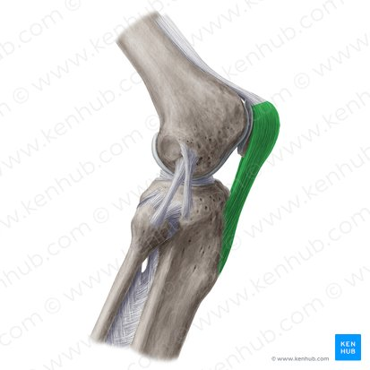
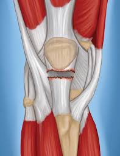
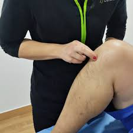

Tendón Rotuliano
El tendón rotuliano (o patelar) es una banda fibrosa gruesa que conecta la rótula con la tibia. Es fundamental para la extensión de la rodilla y el salto.

Lesiones comunes del tendón rotuliano
Las lesiones del tendón rotuliano van desde la inflamación leve (tendinitis o tendinopatía) hasta el desgarro o rotura completa. Son comunes por sobrecarga en deportes de salto (conocida como "rodilla del saltador"), causando dolor agudo o crónico debajo de la rótula y dificultad para extender la rodilla.
- Tendinitis (Tendinopatía) Rotuliana: Inflamación o microdesgarros por movimientos repetitivos (correr, saltar). Es la más frecuente en atletas.
- Rotura o Desgarro: Puede ser parcial o total. Ocurre por un salto brusco, una caída o un traumatismo directo.

Síntomas principales
- Dolor localizado:Sensibilidad aguda o ardor justo en la parte inferior de la rótula.
- Rigidez:Molestias al arrodillarse, al subir escaleras o al ponerse de pie tras estar sentado.
- Hinchazón y chasquidos: En casos de roturas graves, se puede escuchar un "pop" o sentir un desgarro, acompañado de inflamación y hundimiento debajo de la rótula.

Opciones de tratamiento
- Enfoque conservador:Reposo, hielo y el uso de analgésicos para reducir la inflamación.
- Fisioterapia:Ejercicios de fortalecimiento progresivo (como estiramientos y entrenamiento excéntrico) para rehabilitar el tendón.
- Intervención médica:Puede incluir terapias regenerativas (infiltraciones) y, en casos de rotura total, cirugía reconstructiva.